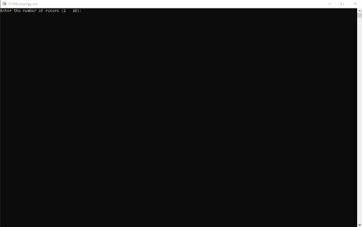
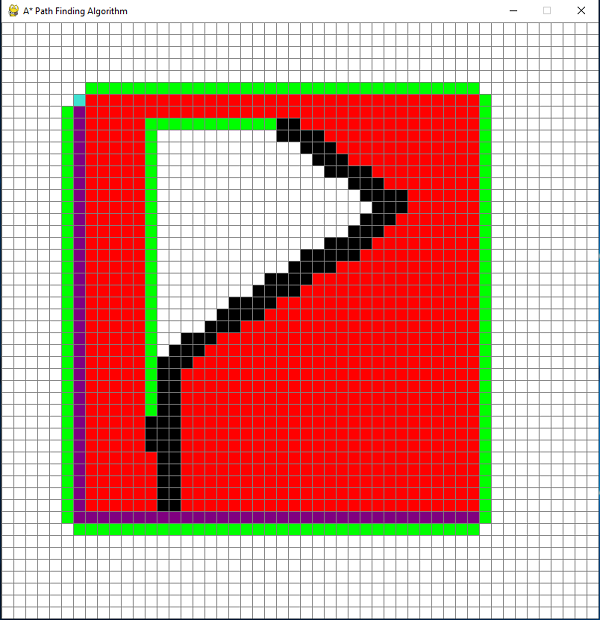
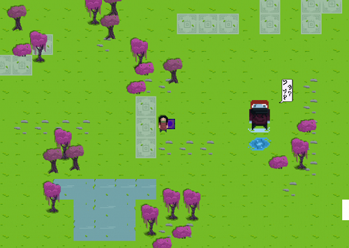
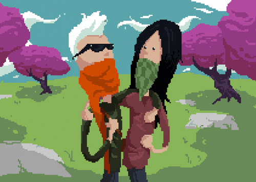

My work
A selection of my range of work
Unreal engine

Dolly zoom / Vertigo effect
A dolly zoom is an in-camera effect that appears to undermine normal visual perception. The effect is achieved by zooming a zoom lens to adjust the angle of view while the camera dollies toward or away from the subject in such a way as to keep the subject the same size in the frame throughout.

ColorShooter
This is a small First-person C++ project. The goal of this game is that every time we shoot an object it shrinks and disappears under a certain threshold hits, when we hit the cubes we get feedback by changing its color. You can check the main functionality written in C++ below
void AFPSProjectile::OnHit(
UPrimitiveComponent* HitComp, AActor* OtherActor, UPrimitiveComponent* OtherComp, FVector NormalImpulse, const FHitResult& Hit){
// Only add impulse and destroy projectile if we hit a physics
if ((OtherActor != NULL) && (OtherActor != this) && (OtherComp != NULL) && OtherComp->IsSimulatingPhysics()){
OtherComp->AddImpulseAtLocation(GetVelocity() * 100.0f, GetActorLocation());
FVector _Scale = OtherComp->GetComponentScale();
// Make it smaller
_Scale = _Scale * 0.8f;
if (_Scale.GetMin() < 0.5f){
// We cant to destry the whole Actor not just the component
OtherActor->Destroy();}
else{
OtherComp->SetWorldScale3D(_Scale);}
UMaterialInstanceDynamic* _MatInst = OtherComp->CreateAndSetMaterialInstanceDynamic(0);
if(_MatInst){
// Change the RGB color, stored in a vector
_MatInst->SetVectorParameterValue("Color", FLinearColor::MakeRandomColor());}}}

Interacting systems
Interacting system components that can be attached to any actor, apply physics forces to components that are detected through tracing.
Unity

CubicLerp between 4 points
private Vector3 QuadraticLerp(Vector3 a, Vector3 b, Vector3 c, float t){
Vector3 ab = Vector3.Lerp(a, b, t);
Vector3 bc = Vector3.Lerp(b, c, t);
return Vector3.Lerp(ab, bc, interpolateAmount);}
private Vector3 CubicLerp(Vector3 a, Vector3 b, Vector3 c, Vector3 d, float t){
Vector3 ab_bc = QuadraticLerp(a, b, c, t);
Vector3 bc_cd = QuadraticLerp(b, c, d, t);
return Vector3.Lerp(ab_bc, bc_cd, interpolateAmount);}

2D RPG adventure
Currently building a 2D RPG-style game, still havent defined most of the functionalities of this game.

Ballz
A simple Ballz game where every wave you get to lunch one more ball. Every wave is more difficult, try to survive as much time as you can.
Pygame


Turtle race
This is a small project where The user picks how many turtles they want to race, and the program will race that many turtles by randomly moving them across the screen.

Pathfinding Visualization
Simple path finding visualizer tool to visualize the a star pathfinding algorithm as it runs. This astar pathfinding algorithm is an informed search algorithm which means it is much more efficient that your standard algorithms like breadth first search or depth first search. You have to specify the start and end point, then draw all the obstacles on the map.
WinForms

Battleships
Battleship is a war-themed board game for two players in which the opponents try to guess the location of the other's various ships.The goal of the game is to sink all of the opponent's ships by correctly guessing their location on the grid.
Gamejam Games

Bob in Colorland
I was solo developing this game for the purpose of the gamejam+ competition. The game is about a painter who is collecting colors to paint his way to glory. Each collected color gives you a special ability, for example, blue once gives you access to spawning platforms.

Defector
Defector 2D Platformer was made in Unreal Engine with a team of three people. Me as programmer, game designer, and artist. My Programming Responsibilities were to implement the UI and its functionalities, design all the moving scaling and rotating platforms, and implement the system for health.

The Last Kompir
The Last Kompir is a hack and slash survivor game mede in Unreal Engine. You are fighting with waves of vegetable zombies to survive the adventure. I scripted the platforms for dashing and launching the player into the air and also the logic for the waves of enemies.

Shadow's Rune
I'm really proud of this project since the whole level was designed and programmed by me in Unreal Engine. My responsibility was to design the whole level to be scary and implement mechanics for picking all the letters in the level. This game is based on Horror-Puzzle experience about a single father with daughter whom had unexplained twist of events as the daughter dies of unnatural reasons. The father falls in huge depression to find his way out of the protagonist hypnotic possession, as he is being awaken in an alter reality of a dreams including himself being tortured on their happy moments they used to had before.


Vosh ges ozhai acha?
Vosh ges ozhai acha was my first try to make a game in GameMaker. With a focus on originality, we created this stunning 2D adventure showing off in-depth pixel graphics. The setting is a baren fantasy world, untouched and covered with deep seas and lush forests. Our main objective was conveying the story through as little interaction as possible through crippling GUIs and text. The story features two young people who find themselves stranded in an unfamiliar environment, greeted by what seems to be an alien with shady intentions and a habbit of being very moody. The player is overwhelmed with questions and almost no answers, constantly asking himself "What will happen next?"